祝！！HD PENTAX-DA 55-300mmF4.5-6.3ED PLM WR RE 購入！！
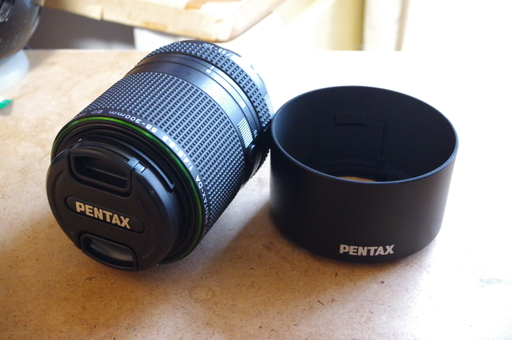
テレ端 300mm のレンズなど手に入れてしまったので我慢できずに茨木市耳原公園にとり散歩にでかけました。
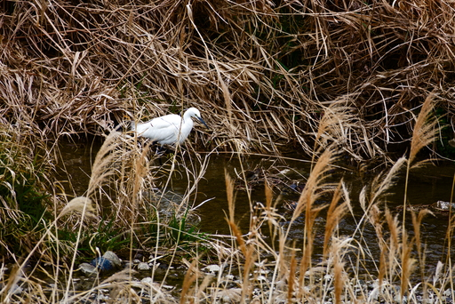
幣久良橋から川面を見下ろすとコサギが何かを探している様子。
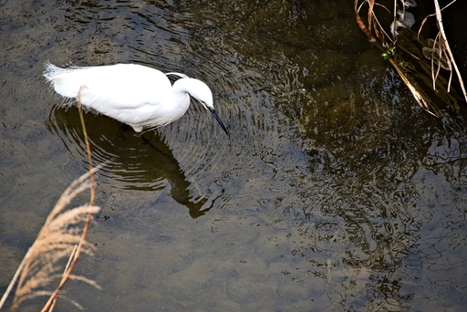
餌を探している模様。
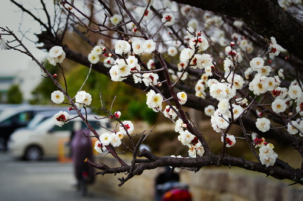
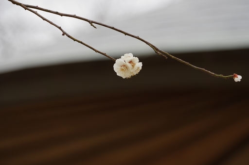
耳原公園は梅が満開でした。
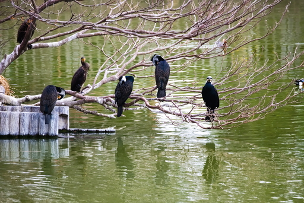
耳原大池に住んでいるカワウたち。
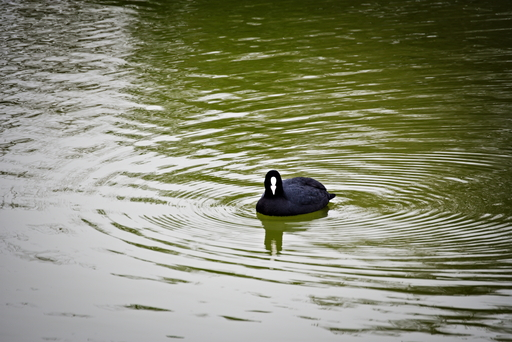
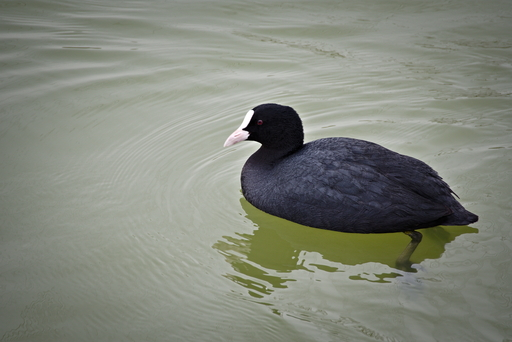
オオバンたちもいつもどおりいます。
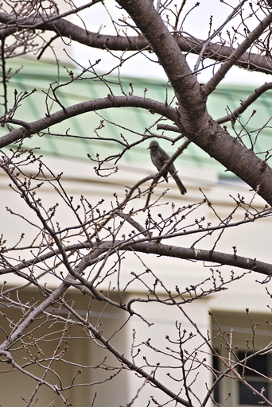
声がしたのでそちらを向くとヒヨドリが。
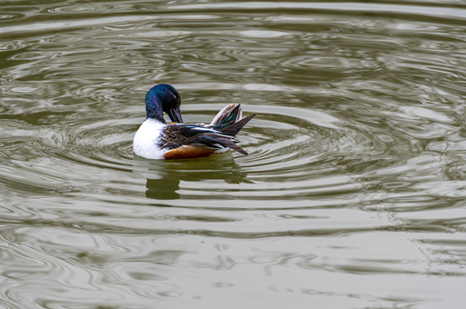
背中を掻いている (?) オスのハシビロガモ。
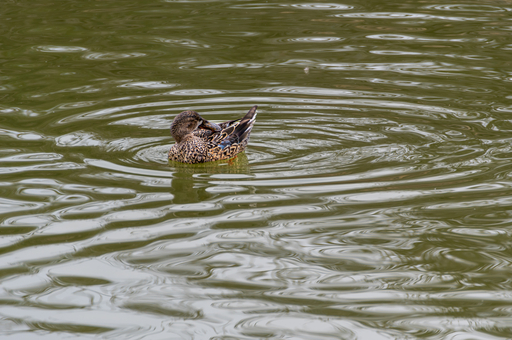
こっちはメスのハシビロガモ。
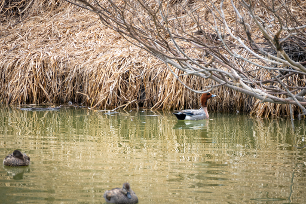
このヒドリガモは何を見てるのかな？
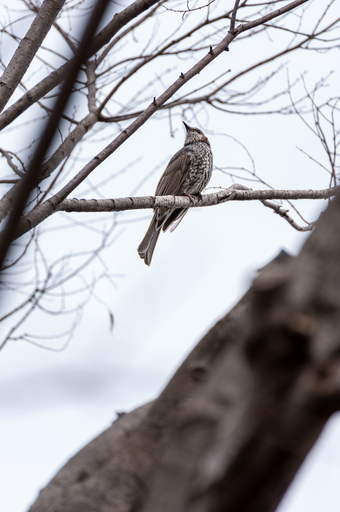
ヒヨドリ、こんどはうまく撮れた。
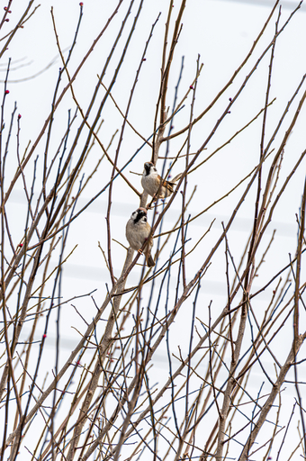
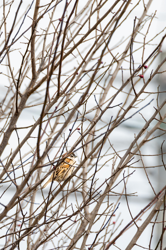
珍しくないとはいえ、じっくり観るとなかなかユニークなスズメたち。
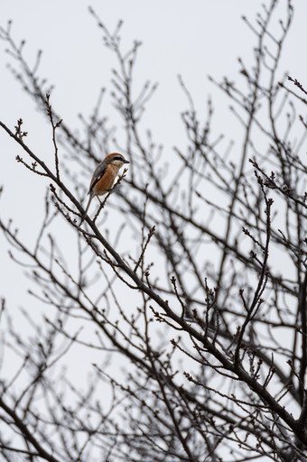
モズ。
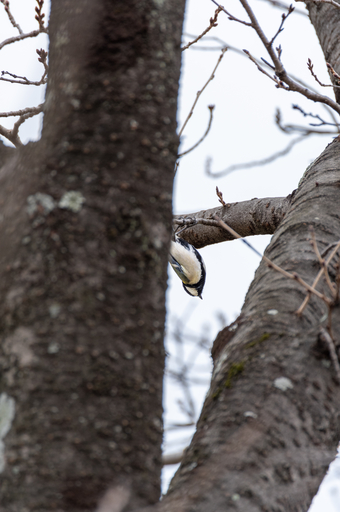
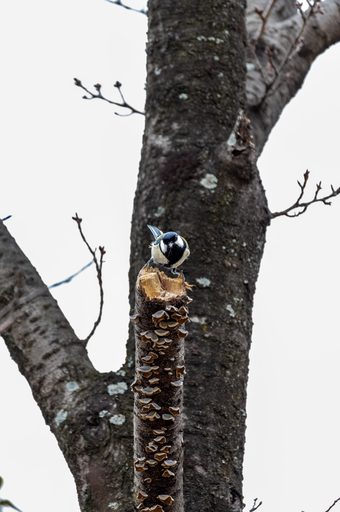
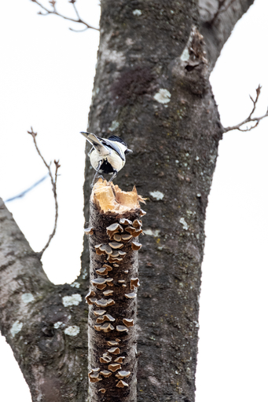
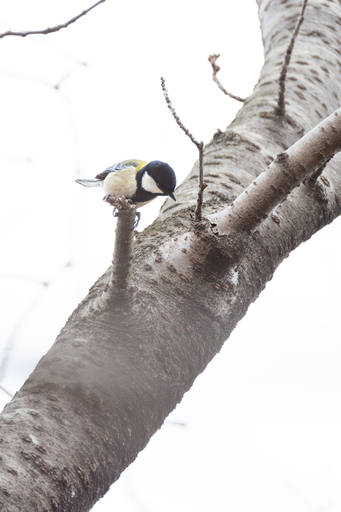
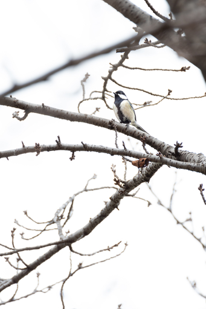
シジュウカラは元気に木々の間を飛び回ってました。
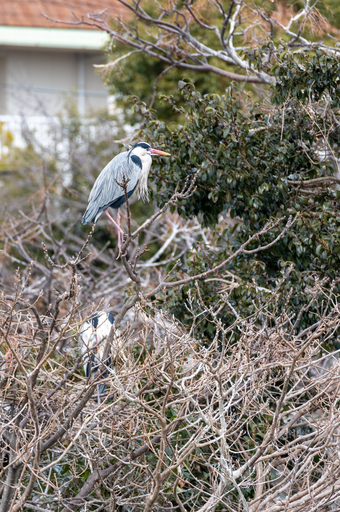
耳原公園の長老 (?)、アオサギ翁。
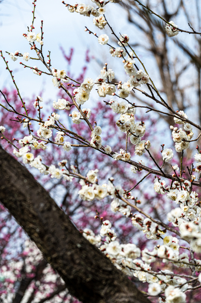
梅が綺麗。
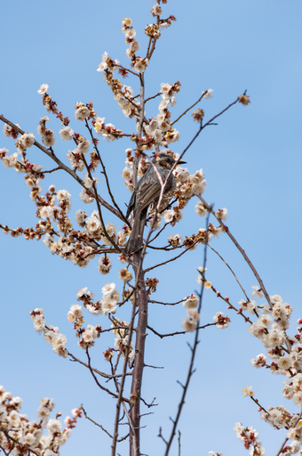
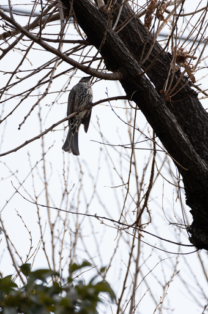
ヒヨドリたち。
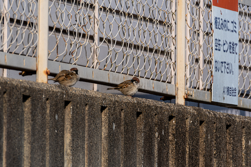
最後に近所の福良スズメたち。
今日はいろんな子達と会えましたが寒いことは寒いんです。